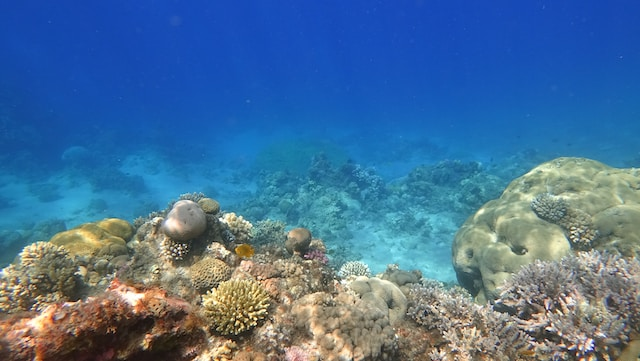

Scoperta di una nuova specie di papera di gomma
pubblicato da Diana Rossi
in data 15/01/2023
Un breve articolo sulla recente scoperta di una specie di papera di gomma mai vista prima.

Un breve articolo sulla recente scoperta di una specie di papera di gomma mai vista prima.
Esplorazione di tradizioni culinarie dimenticate e la ricerca di sapori autentici.

Un viaggio nelle profondità dell'oceano alla scoperta di creature misteriose e inesplorate.
Un'analisi delle tendenze e delle sfide nell'arte contemporanea, con interviste ad artisti emergenti.